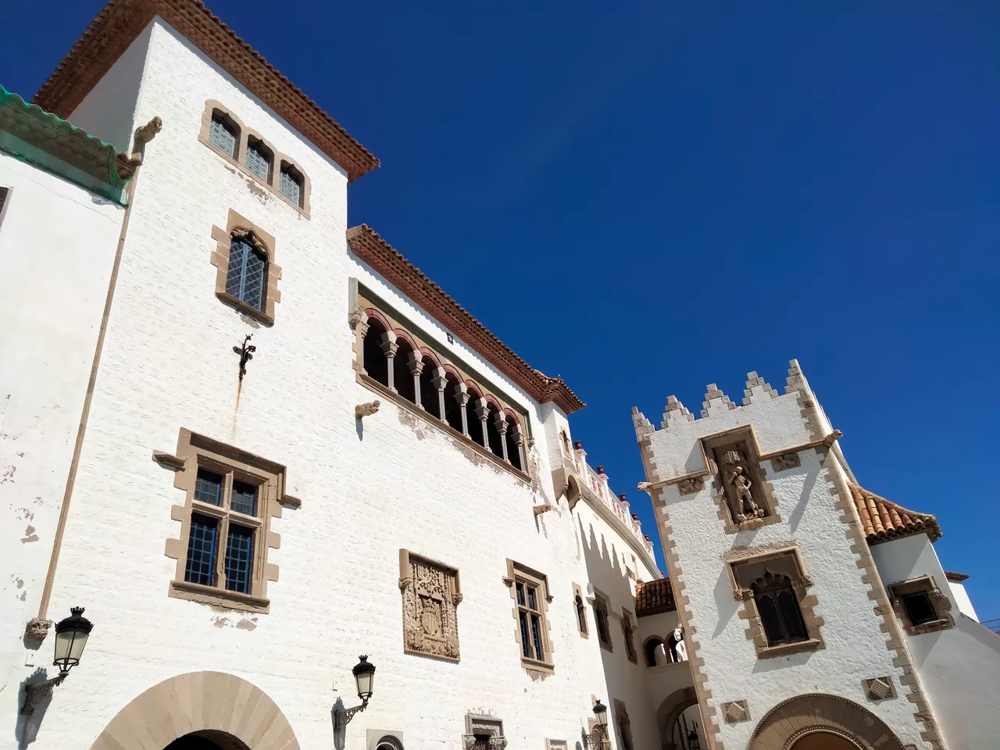

Palau de Maricel

| 지역 | Barcelona |
|---|---|
| 등급 | Recommended |
| 언제 | 일정에 배정된 날을 시간표에서 찾지 못했다 |
| 상세 | 챕터 본문에서 보기 |
참고
오프라인입니다. 위키백과와 지도 링크는 연결되면 다시 동작합니다.
요금 미확인 — 현장 확인 필요 · 운영 4–10월 화–일 10:00–19:00 (11–3월 화–일 10:00–17:00) · 휴관 월요일 휴관 예약 공식 확인 불가 — +34 93 894 03 64 문의 · 소요 미확인 — 현장 확인 필요 · 가는 법 미확인 — 현장 확인 필요
⚠ 9/1(화)에는 관람할 수 없다. 가이드 투어 전용 — 7·8월 화·수 / 9월–6월 일요일만 · 9/1(화) 관람 불가 이 날의 대안은 Cau Ferrat + Museu de Maricel 통합권 — 4–10월 화–일 10:00–19:00 (11–3월 화–일 10:00–17:00) · Cau Ferrat + Museu de Maricel 통합권 €12 (3관 통합 €17)
1909년, 미국인 사업가이자 미술 수집가 찰스 디어링이 마리셀 궁 건설을 후원했다. 카우 페라트 바로 옆이다.
루시뇰이 예술가의 시체스를 만들었다면, 디어링은 부자의 시체스를 만들었다. 두 건물이 붙어 있는 것이 이 마을의 20세기 초를 요약한다.
건축은 미켈 우트리요가 맡았다 — 화가이자 엔지니어이고, 몽마르트르 시절 수잔 발라동의 연인으로 회화사에 이름이 걸치는 인물이다. 어부의 집들을 사들여 회랑과 테라스로 잇고, 고딕·르네상스 석조 부재를 스페인 각지에서 가져와 짜 넣었다. '마리셀(Maricel)'은 바다(mar)와 하늘(cel) 을 합친 이름이고, 바다 쪽 회랑에 서면 그 이름이 과장이 아니라는 걸 알게 된다.
디어링과 우트리요의 협업은 10년을 못 갔다 — 1921년 디어링이 컬렉션을 미국으로 실어 가면서 건물만 남았다. 두 사람이 갈라선 이유는 지금도 분분한데, 남은 것은 건물과 이름뿐이다. 지금은 시가 관리하는 미술관·행사 공간이고, 컬렉션이 떠난 뒤에도 건물이 장소의 힘으로 살아남은 드문 사례다.
시간이 부족하면 카우 페라트 우선. 마리셀은 외부와 바다 쪽 회랑만 봐도 성격이 잡힌다.